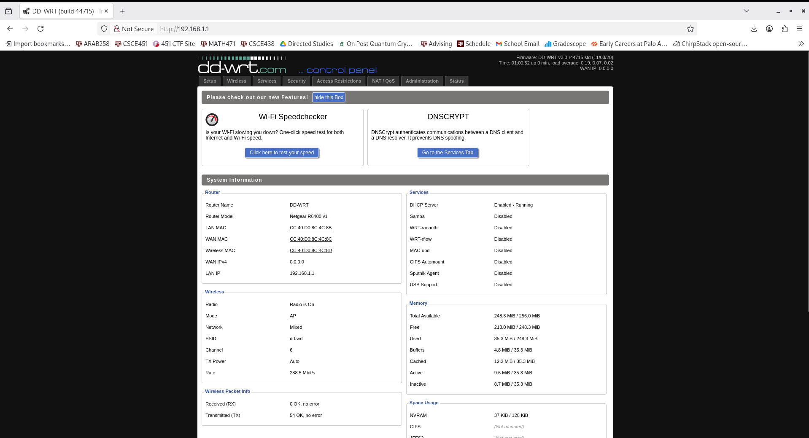

Overview
This is part of a larger DD-WRT project. This page describes the process I used to install DD-WRT on my NETGEAR R7000 router.
Technical Details
Host Computer:
The host computer I used is an HP ZBook G14 running Debian 12 (bookworm).
Router:
The router used is a NETGEAR R7000 Nighthawk router.

Figure 1: NETGEAR R7000 Router Front

Figure 2: NETGEAR R7000 Router Back (Redacted out of principle)
- [DD-WRT Firmware for R7000]
- [NMRP flashing utility]
Note: I used the Factory Image version
Note: jclehner is kind enough to provide pre-built binaries that work on POSIX-compliant systems. I used this prebuilt binary on my Debian 12 bookworm installation.
Steps
- TURN OFF ALL INTERFACES EXCEPT FOR THE ETHERNET INTERFACE YOU WILL USE TO CONNECT TO THE ROUTER.
- Download the DD-WRT firmware image from the link above.
- Turn off the router.
- Connect your computer to the router via Ethernet.
- Find the name of the Ethernet interface that is connected to the router (in my case eno1).
- Execute the following command:
sudo nmrpflash -i {interface name} -f {path to firmware image} - You should see the following:
Waiting for Ethernet Connection (Ctr-C to skip) - Once you see this, turn the router back on and wait. The flashing process will automatically start. DO NOT TURN OFF COMPUTER, ROUTER, OR ETHERNET CABLE DURING THIS PROCESS
- Upon completion, you will see the following:
- Now you're done! Reboot the device and connect to the router portal. You should see the following:
Advertising NMRP server on eth2 ... /
Received configuration request from {router MAC}
Sending configuration: {IP}
Received upload request: filename 'firmware'.
Uploading{firmware image filename} ... OK (3539077 b)
Waiting for remote to respond.
Received keep-alive request (11).
Remote finished. Closing connection.
Reboot your device now.

Figure 3: NETGEAR R7000 Router Front